### Chapter 1: Introduction to Computer Networks
#### 1.1 Overview of Computer Networks Computers, information resources, and people are the three essential elements of the network world. Network integration, universality, and modern network's main characteristics include connectivity, economy, scalability, reliability, and adaptability. The basic problem of the telephone network is switching, circuit switching, and hierarchical addressing (circuit switching, time-division switching). The tree structure is used. The telegraph network uses circuit switching, storage forwarding, and message switching. The computer network uses packet switching, statistical time-division switching, virtual circuit switching, and routing, forming a hierarchical network.
#### 1.2 Network Architecture Design 1. **Concept of Services and Protocols in Layered Models** - **Service**: The relationship between layers. - **Protocol**: The relationship between peer entities at the same layer.

2. **Services in the OSI Seven-Layer Model** - **Physical Layer**: Responsible for the reliable transmission of bits between nodes. - **Data Link Layer**: Responsible for the reliable transmission of frames between nodes, handling errors and multiple access problems. - **Network Layer**: Responsible for the reliable transmission of packets between nodes, using routing. - **Transport Layer**: Responsible for reliable end-to-end communication and providing a certain level of service quality.
#### 1.3 Reliable Communication 1. **Physical Layer Services** - **NRZ**: 0 low, 1 high. Baseband transmission, clock recovery, and continuous 0. - **Manchester Encoding**: 0 low 1 high. Clock recovery and continuous 0. - **Biphase Mark Encoding**: 0 low 1 high. Clock recovery and continuous 0. - **8B6B Encoding**: 0 low 1 high. Clock recovery and continuous 0. - **Cyclic Redundancy Check (CRC)**: Error detection and correction using polynomial division.
### Chapter 2: Network Architecture Design
#### 2.1 Services and Protocols in Layered Models - **Service**: The relationship between layers. - **Protocol**: The relationship between peer entities at the same layer.

#### 2.2 Services in the OSI Seven-Layer Model - **Physical Layer**: Responsible for the reliable transmission of bits between nodes. - **Data Link Layer**: Responsible for the reliable transmission of frames between nodes, handling errors and multiple access problems. - **Network Layer**: Responsible for the reliable transmission of packets between nodes, using routing. - **Transport Layer**: Responsible for reliable end-to-end communication and providing a certain level of service quality.
#### 2.3 Reliable Communication 1. **Physical Layer Services** - **NRZ**: 0 low, 1 high. Baseband transmission, clock recovery, and continuous 0. - **Manchester Encoding**: 0 low 1 high. Clock recovery and continuous 0. - **Biphase Mark Encoding**: 0 low 1 high. Clock recovery and continuous 0. - **8B6B Encoding**: 0 low 1 high. Clock recovery and continuous 0. - **Cyclic Redundancy Check (CRC)**: Error detection and correction using polynomial division.
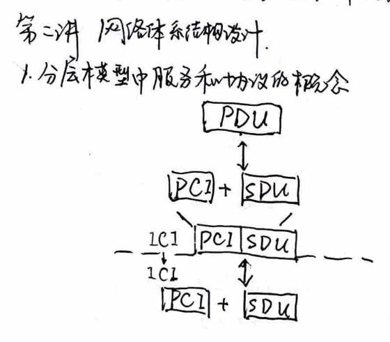
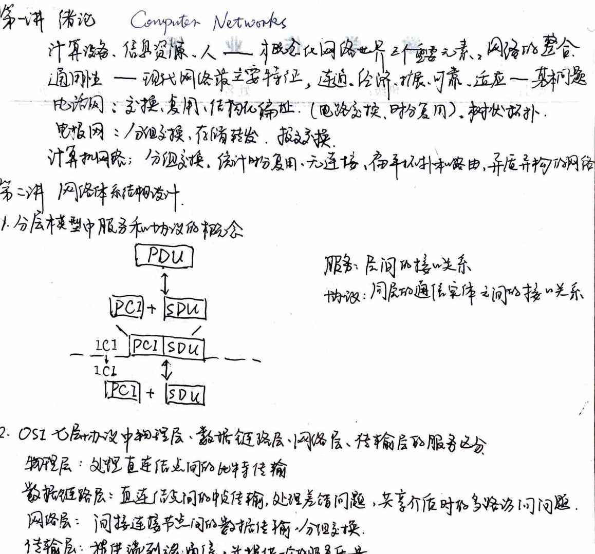
2. Various framing techniques, advantages and disadvantages, and their applicable ranges:
1. Time interval method: Frame inter-frame gaps. The inter-frame gap is uncertain. 2. Control character method: Frame header inserted control characters (STX, ETX). Frame separation characters appear in the text. 3. Character fill boundary method: Control characters or special characters are placed at the beginning of the frame. The frame length is an integer multiple of the character length. 4. Bit fill boundary method: 01111110 is the frame boundary marker, and 5 or 6 consecutive 1s are added in the text. This method can detect and correct errors. Total bits = M + ⌊M/K_max⌋ V
3. Stop-and-wait ARQ, selective retransmission ARQ, and their working principles, as well as the selection of sequence number space size (CCS):
1. Stop-and-wait ARQ - Reception window 0..1, transmission window 0..1. Efficiency = D_Tp / (D_Tp + D_A + 2D_p), RTT = 2D_p. - Sequence number space: SN = i or i+1, RN = i or i+1. Efficiency can be improved through parallel stop-and-wait ARQ. 2. NARQ - Reception window = 1, transmission window SN_max - SN_min. - Sequence number space: m ≥ 1 + SN_max - SN_min. 3. Selective retransmission ARQ - Reception window = transmission window = SN_max - SN_min = RN_max - RN_min + 1. - Sequence number space: m ≥ 2(SN_max - SN_min). Improvement: increase window size, multiple retransmission.
3. Medium Access Control Algorithms
1. Medium access control algorithm basic classification - Random access: Use resources, detect collisions, resolve conflicts. - Reservation: Allocate resources, time division, no collisions. - Round-robin: Allocate resources in a fixed order, no collisions.
2. Random Access, Predictive Access, and Round-Robin Access Algorithms: Basic Principles and Performance Analysis
1. Random Access 1) ALOHA - Transmission Delay: 2Dp, Collision Probability: 2 × Frame Transmission Time - Collision Probability: S = Ge^(-2G) ≤ 0.184
2) Slotted ALOHA - Time Slot (Hard Synchronization) - Collision Probability: S = Ge^(-G) ≤ 0.368
3) CSMA - Listen Before Send (P-), Listen After Send (non-P-) - Collision Probability: Dpmax
4) CSMA/CD - Random Backoff - Collision Probability: Dpmax
2. Predictive Access (Hard Synchronization) 1) Basic Predictive Access - M Users, M Time Slots, Time Division Multiplexing, Listen Before Send - Channel Utilization: kdy / (N + kdy), k ∈ [1, N]
2) Slotted Predictive Access
- M Users, 3) Binary Exponential Backoff + Predictive Time Slot Reservation (No Delay)
- Channel Utilization: α / (1 + log2 N) * k
- k = [log2 N] Time Slots per Frame (Number of Users = 1)
- Nk = N Time Slots per Frame (Number of Users = N)
1. Center-controlled mode: - Center-controlled polling sequence: 0101020102030 - Total polling time = 2(D1 + 2D2 + D3) (Polling sequence 0102030, each station polls).
2. Star mode: - Introduce a central node, forming a hierarchical structure: 012121310 - Total polling time = 2(D1 + 2D2 + D3) (Polling sequence 0121310, each station polls).
3. Ring mode (logical ring, physical ring): - No center, each station polls the next downstream: 0123210 - Total polling time = 2(D1 + D2 + D3) (Polling sequence 01230, each station polls).
4. Token ring network design and implementation (logical ring): - Frame format: - 01111110: Idle token - 01111111: Active token. - Token ring捎带确认: - A=0 C=0: Target does not exist - A=1 C=0: Error frame; receive NAK. - A=1 C=1: ACK. - Ring delay = ring length × bit rate / baud rate + node count × node processing delay (bit). - Token ring time = active user count × token holding time + ring delay. - Inter-frame interval = total user count × token holding time + ring delay. - Throughput = frame length / bit rate × frame length + ring delay × idle token transmission delay.
5. Ethernet principles and implementation (MAC sublayer): - CSMA/CD + binary exponential backoff (time after collision is divided into 2T time slots).
### Chapter: Network Expansion and Spanning Tree Protocol
#### 1. Frame Structure and Spanning Tree Algorithm's Scalability Issues
- **Frame Structure**: 6B目的地址 6B源地址 2B长度/类型 46~1500B数据 4B校验. - **Transmission Method**: Broadcast + Selective Reception - **Physical Layer**: Signal Transmission - **MAC Layer**: Transmission Timing
#### 2. Differentiating Between Repeaters, Hubs, Bridges, and Switches
- **Repeaters**: Physical Layer. Amplify. - **Hubs**: Physical Layer. Multi-port repeaters, no collision domain. - **Bridges**: MAC Layer. MAC frame forwarding, no collision domain (between networks). - **Switches**: MAC Layer. Microsegmentation, no collision domain, full-duplex, no collision (optimized by switch internal algorithms).
#### 3. Spanning Tree Protocol (STP) Operation (Expanding Spanning Tree)
1. **Self-Study** - **Broadcast**: Learn source address, forward to destination address, broadcast to other ports. 2. **Bridging Tree** - **BPDU**: Bridge Protocol Data Unit (root ID, source ID, cost). - 1) Assume it is a bridge. Insert own ID into root ID and source ID. Set cost to 0. - 2) Broadcast and receive BPDU. Select the best BPDU (root ID smallest, root ID equal to source ID). - 3) Send BPDU (root ID = smallest root ID, source ID = root ID, cost = smallest root ID corresponding cost + 1). - 4) Repeat step 2. - **Result**: Construct a spanning tree. The root bridge has the lowest cost. Other bridges are not fixed.
#### Impact: - **Broadcast Limitation**: The broadcast limit restricts the network scale.
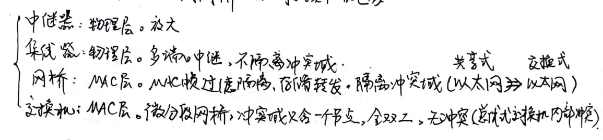
### Chapter Eight: IP Address Structure
1. **IP Address Overview** ABC Class → Classless Inter-Domain Routing (CIDR).
2. **CIDR Basics and Advantages** CIDR's basic principles and advantages (disadvantages: block-based address allocation may lead to address waste). **No Classless Inter-Domain Routing**: Network ID + Subnet Length. **Smaller Routing Tables**: Smaller routing tables, longest prefix matching.
3. **Simple Network Address Planning and IP Allocation** Number of hosts + 2 ≤ 2^(number of bits), gateway and server IP allocation without constraints.
### Chapter Nine: Routing Algorithms in Indirect Networks 1. **Distance Vector Algorithm for Calculating Shortest Paths** Basic principles and disadvantages. ① Routing table lists the current router's known shortest distances to each destination and the used routes (ports). ② Update the routing table through neighbor exchanges. **Link Breaks**: Reception issues! **Advantages**: Local information exchange, information compression. **Disadvantages**: Memory, bandwidth, delay.
2. **Link State Algorithm for Calculating Shortest Paths** **Link State Packet (LSP)**: Neighbor node name and arrival cost. Dijkstra's algorithm → Single Source Shortest Path.
3. **Link State Algorithm's LSP Data Diffusion Mechanism** ① LSP flooding, node forwarding. ② If the sequence number is new, replace the existing LSP and forward to neighbors. Otherwise, no action.
### Chapter Ten: Heterogeneous Network Interconnection 1. **Connection-Oriented and Connectionless Data Forwarding** ① Connection-Oriented Data Forwarding **Connection Establishment**: **Data Transmission**: **Sequence Number Increment**: **Data Fragmentation**: **Data Fragmentation**: **Data Fragmentation**: **Data Fragmentation**: **Data Fragmentation**: **Data Fragmentation**: **Data Fragmentation**: **Data Fragmentation**: **Data Fragmentation**: **Data Fragmentation**: **Data Fragmentation**: **Data Fragmentation**: **Data Fragmentation**: **Data Fragmentation**: **Data Fragmentation**: **Data Fragmentation**: **Data Fragmentation**: **Data Fragmentation**: **Data Fragmentation**: **Data Fragmentation**: **Data Fragmentation**: **Data Fragmentation**: **Data Fragmentation**: **Data Fragmentation**: **Data Fragmentation**: **Data Fragmentation**: **Data Fragmentation**: **Data Fragmentation**: **Data Fragmentation**: **Data Fragmentation**: **Data Fragmentation**: **Data Fragmentation**: **Data Fragmentation**: **Data Fragmentation**: **Data Fragmentation**: **Data Fragmentation**: **Data Fragmentation**: **Data Fragmentation**: **Data Fragmentation**: **Data Fragmentation**: **Data Fragmentation**: **Data Fragmentation**: **Data Fragmentation**: **Data Fragmentation**: **Data Fragmentation**: **Data Fragmentation**: **Data Fragmentation**: **Data Fragmentation**: **Data Fragmentation**: **Data Fragmentation**: **Data Fragmentation**: **Data Fragmentation**: **Data Fragmentation**: **Data Fragmentation**: **Data Fragmentation**: **Data Fragmentation**: **Data Fragmentation**: **Data Fragmentation**: **Data Fragmentation**: **Data Fragmentation**: **Data Fragmentation**: **Data Fragmentation**: **Data Fragmentation**: **Data Fragmentation**: **Data Fragmentation**: **Data Fragmentation**: **Data Fragmentation**: **Data Fragmentation**: **Data Fragmentation**: **Data Fragmentation**: **Data Fragmentation**: **Data Fragmentation**: **Data Fragmentation**: **Data Fragmentation**: **Data Fragmentation**: **Data Fragmentation**: **Data Fragmentation**: **Data Fragmentation**: **Data Fragmentation**: **Data Fragmentation**: **Data Fragmentation**: **Data Fragmentation**: **Data Fragmentation**: **Data Fragmentation**: **Data Fragmentation**: **Data Fragmentation**: **Data Fragmentation**: **Data Fragmentation**: **Data Fragmentation**: **Data Fragmentation**: **Data Fragmentation**: **Data Fragmentation**: **Data Fragmentation**: **Data Fragmentation**: **Data Fragmentation**: **Data Fragmentation**: **Data Fragmentation**: **Data Fragmentation**: **Data Fragmentation**: **Data Fragmentation**: **Data Fragmentation**: **Data Fragmentation**: **Data Fragmentation**: **Data Fragmentation**: **Data Fragmentation**: **Data Fragmentation**: **Data Fragmentation**: **Data Fragmentation**: **Data Fragmentation**: **Data Fragmentation**: **Data Fragmentation**: **Data Fragmentation**: **Data Fragmentation**: **Data Fragmentation**: **Data Fragmentation**: **Data Fragmentation**: **Data Fragmentation**: **Data Fragmentation**: **Data Fragmentation**: **Data Fragmentation**: **Data Fragmentation**: **Data Fragmentation**: **Data Fragmentation**: **Data Fragmentation**: **Data Fragmentation**: **Data Fragmentation**: **Data Fragmentation**: **Data Fragmentation**: **Data Fragmentation**: **Data Fragmentation**: **Data Fragmentation**: **Data Fragmentation**: **Data Fragmentation**: **Data Fragmentation**: **Data Fragmentation**: **Data Fragmentation**: **Data Fragmentation**: **Data Fragmentation**: **Data Fragmentation**: **Data Fragmentation**: **Data Fragmentation**: **Data Fragmentation**: **Data Fragmentation**: **Data Fragmentation**: **Data Fragmentation**: **Data Fragmentation**: **Data Fragmentation**: **Data Fragmentation**: **Data Fragmentation**: **Data Fragmentation**: **Data Fragmentation**: **Data Fragmentation**: **Data Fragmentation**: **Data Fragmentation**: **Data Fragmentation**: **Data Fragmentation**: **Data Fragmentation**: **Data Fragmentation**:
2. Comparison of Connection-Oriented and Connectionless Services.
**Connection-Oriented:** - **Management Level:** Based on the sequence of connections, grouped by the same destination address. - **Fault Status:** Based on the connection's failure. - **State Change Frequency:** Connection establishment and termination. - **State Association:** Connection before and after the connection. - **Resource Reservation:** $$\downarrow$$ **Connectionless:** - **Fault Status:** Based on the address's failure. - **State Change Frequency:** Network structure changes. - **State Association:** Not associated. - **Support for Heterogeneous Services:** IP over everything, everything over IP.
3. Complete IP Addressing Process, IP Address & MAC Address Relationship.
① Network-Internal Addressing (Network IP & mask = Network IP & mask) 1) ARP (Address Resolution Protocol) dynamically builds IP → MAC mapping table. 2) The target IP is not in the ARP table. Broadcast ARP packet (own IP, own MAC, target IP). 3) Same-network target IP responds, caching this information in its ARP table. Other hosts update their ARP tables.
② Network-External Addressing. 1) Missing Gateway (Neighbor Router) MAC not in ARP table. Broadcast ARP packet to obtain its MAC (network internal address). 2) Forward the packet to the missing gateway. The router forwards based on the destination address (continuously updating MAC addresses). 3) Reach the gateway of the target network. The router forwards the packet to the target based on the network internal address. Router: Spanning Broadcast Domain.
③ DHCP: Dynamic Host Configuration Protocol Broadcast DHCP Discover message to DHCP server to obtain an IP address. Obtain own IP via MAC.
Chapter 11: IPv6 Technology Special Topic.
1. IPv6 Basic Principles $$ \text{40B header} + \text{extension header 1} + \text{extension header 2} + \ldots + \text{upper layer PDU} $$ TLA + NLA: ISP + SLA MAC ↔ IP
Extension header: Quality of Service, Mobility, Security.
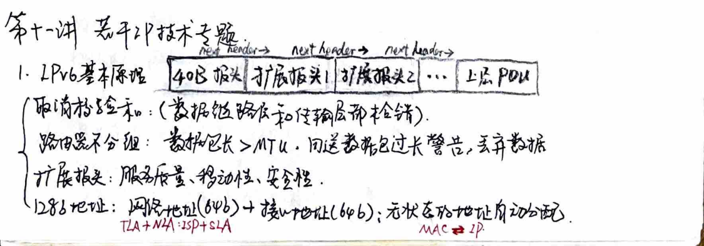
### Mobile IP Basic Principles
#### IPv4 1. **Mobile Node Registration:** - When a mobile node connects to a home network or a foreign network, it registers its home address with the home agent. If it connects to a foreign network, it registers its foreign address with the foreign agent. The mobile node then registers its home address with the home agent. 2. **Data Transmission:** - When the mobile node sends data, it uses tunneling technology to encapsulate the data in a new packet header and sends it to the foreign agent. The foreign agent then forwards the packet to the home agent, which routes it to the mobile node's home address. 3. **Direct Communication:** - When the mobile node communicates directly with a device on the same network segment, it uses the same IP address as the home agent. The data is routed directly without the need for tunneling.
#### IPv6 1. **Mobile Node Registration:** - When a mobile node connects to a foreign network, it registers its home address with the home agent. The mobile node then registers its home address with the home agent. 2. **Data Transmission:** - When the mobile node sends data, it uses tunneling technology to encapsulate the data in a new packet header and sends it to the foreign agent. The foreign agent then forwards the packet to the home agent, which routes it to the mobile node's home address. 3. **Direct Communication:** - When the mobile node communicates directly with a device on the same network segment, it uses the same IP address as the home agent. The data is routed directly without the need for tunneling.
### MPLS: Multi-Protocol Label Switching
#### MPLS Overview - **MPLS Header:** - The MPLS header is placed between the IP header and the lower layer header. - Each entry in the routing table is marked with a label, which is used by the label distribution protocol to inform the router of the label. This improves the forwarding speed. - **Label Switching:** - The forwarding process changes from table lookup to label switching. The forwarding mode remains unchanged. - The label switching mechanism is based on the label distribution protocol and the connection establishment process. - **Label Switching Mechanism:** - The label switching mechanism is based on the label distribution protocol and the connection establishment process. - The label distribution protocol is used to establish the label distribution between routers. - The label switching mechanism is based on the label distribution protocol and the connection establishment process. - The label switching mechanism is based on the label distribution protocol and the connection establishment process. - The label switching mechanism is based on the label distribution protocol and the connection establishment process. - The label switching mechanism is based on the label distribution protocol and the connection establishment process. - The label switching mechanism is based on the label distribution protocol and the connection establishment process. - The label switching mechanism is based on the label distribution protocol and the connection establishment process. - The label switching mechanism is based on the label distribution protocol and the connection establishment process. - The label switching mechanism is based on the label distribution protocol and the connection establishment process. - The label switching mechanism is based on the label distribution protocol and the connection establishment process. - The label switching mechanism is based on the label distribution protocol and the connection establishment process. - The label switching mechanism is based on the label distribution protocol and the connection establishment process. - The label switching mechanism is based on the label distribution protocol and the connection establishment process. - The label switching mechanism is based on the label distribution protocol and the connection establishment process. - The label switching mechanism is based on the label distribution protocol and the connection establishment process. - The label switching mechanism is based on the label distribution protocol and the connection establishment process. - The label switching mechanism is based on the label distribution protocol and the connection establishment process. - The label switching mechanism is based on the label distribution protocol and the connection establishment process. - The label switching mechanism is based on the label distribution protocol and the connection establishment process. - The label switching mechanism is based on the label distribution protocol and the connection establishment process. - The label switching mechanism is based on the label distribution protocol and the connection establishment process. - The label switching mechanism is based on the label distribution protocol and the connection establishment process. - The label switching mechanism is based on the label distribution protocol and the connection establishment process. - The label switching mechanism is based on the label distribution protocol and the connection establishment process. - The label switching mechanism is based on the label distribution protocol and the connection establishment process. - The label switching mechanism is based on the label distribution protocol and the connection establishment process. - The label switching mechanism is based on the label distribution protocol and the connection establishment process. - The label switching mechanism is based on the label distribution protocol and the connection establishment process. - The label switching mechanism is based on the label distribution protocol and the connection establishment process. - The label switching mechanism is based on the label distribution protocol and the connection establishment process. - The label switching mechanism is based on the label distribution protocol and the connection establishment process. - The label switching mechanism is based on the label distribution protocol and the connection establishment process. - The label switching mechanism is based on the label distribution protocol and the connection establishment process. - The label switching mechanism is based on the label distribution protocol and the connection establishment process. - The label switching mechanism is based on the label distribution protocol and the connection establishment process. - The label switching mechanism is based on the label distribution protocol and the connection establishment process. - The label switching mechanism is based on the label distribution protocol and the connection establishment process. - The label switching mechanism is based on the label distribution protocol and the connection establishment process. - The label switching mechanism is based on the label distribution protocol and the connection establishment process. - The label switching mechanism is based on the label distribution protocol and the connection establishment process. - The label switching mechanism is based on the label distribution protocol and the connection establishment process. - The label switching mechanism is based on the label distribution protocol and the connection establishment process. - The label switching mechanism is based on the label distribution protocol and the connection establishment process. - The label switching mechanism is based on the label distribution protocol and the connection establishment process. - The label switching mechanism is based on the label distribution protocol and the connection establishment process. - The label switching mechanism is based on the label distribution protocol and the connection establishment process. - The label switching mechanism is based on the label distribution protocol and the connection establishment process. - The label switching mechanism is based on the label distribution protocol and the connection establishment process. - The label switching mechanism is based on the label distribution protocol and the connection establishment process. - The label switching mechanism is based on the label distribution protocol and the connection establishment process. - The label switching mechanism is based on the label distribution protocol and the connection establishment process. - The label switching mechanism is based on the label distribution protocol and the connection establishment process. - The label switching mechanism is based on the label distribution protocol and the connection establishment process
### Chapter Twelve: Transport Layer and Congestion Control
#### 1. Basic Services Provided by the Transport Layer and Their Implementation Methods
1. **Multiplexing and Demultiplexing**: Establish connections using source port, destination port, and transport layer protocol (TP). 2. **Service Switching**: Selectively switch ARQs, measuring each RTT to RTT. 3. **Congestion Control**: AIMD.
#### 2. TCP Reliable Transmission and Data Link Layer ARQ Differences
| TCP | LLC | | --- | --- | | Reliable Transmission Range | Entire Network | Conflict域 | | Protocol | Selective Repeat | Selective Repeat | | RTT | Estimated | 2Dpmax | | Packet Loss | Router Buffer Overflow | Link Layer Overload |
#### 3. Transport Layer Congestion Control Objectives
Determine appropriate user data transmission rates to avoid congestion caused by overloading. Ensure the network operates in a non-congested state. SR = W x MSS / RTT
#### 4. TCP Tahoe and TCP Reno Window Adjustment Process
1. **TCP Tahoe** 1. When the transport layer transitions from a congested state,启用慢启动, cwnd = 1, cwnd = cwnd x 2 (RTT) 2. From cwnd = ssthresh,启用拥塞避免, cwnd = cwnd + 1 (RTT) 3. Packet loss: cwnd = cwnd / 2. 2. **TCP Reno** 1. When the transport layer transitions from a congested state,启用慢启动, cwnd = 1, cwnd = cwnd x 2 (RTT) 2. From (1) onwards. 3. Upon receiving three duplicate ACKs, immediately retransmit, cwnd = cwnd / 2, reinitiate congestion avoidance. 4. Continuous packet loss leading to timeout, cwnd = cwnd / 2.
#### 5. TCP Transmission Rate and Packet Loss Rate Relationship
$$ \frac{2}{3}w = \frac{1}{p} - 1 \Rightarrow w \approx \sqrt{\frac{3}{2p}} $$
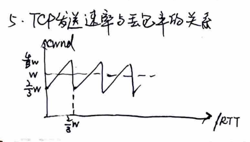
### Chapter 6: AIMD Algorithm and Vector Diagram Analysis
#### Two-User Scenario: - **Single Bottleneck:** Bandwidth \( C \) - **System State:** \( x_1 \) bps, \( x_2 \) bps - **Efficiency Line:** \( x_1 + x_2 = C \) - **Fairness Line:** \( x_1 = x_2 \) - **AIMD:** Achieves fairness and bandwidth optimization. \( \Rightarrow \) TCP Reno
### Chapter 13: P2P Systems and Their Applications
#### 1. P2P Technology Characteristics and Typical Applications: - **Characteristics:** Decentralized resource utilization and peer-to-peer management. - **Applications:** File sharing, information management, P2P computing
#### 2. Unstructured P2P System Query Principles (Gnutella Network): - **Flood Query:** Overlay Network (Application-level virtual network)
#### 3. Unstructured P2P Query Efficiency and Overlay Network Topology Relationship: - \( N \times N \rightarrow O(\log N) \)
#### 4. Structured P2P System Query Principles (DHT and Chord Algorithm): - **DHT:** Distributed Hash Table \( \rightarrow O(\log N) \)
#### (1) Information Distribution Method: - **Circular Name Space:** \( 0 \sim N - 1 \) - **Hash Function:** \( Hash_1 \) (Node) - **Hash Function:** \( Hash_2 \) (Resource) stored in the nearest successor node
#### (2) Node Interconnection Method: - Each node stores the next node's routing pointer
#### (3) Information Search Method: - Sequentially traverse the nodes on the ring, find the resource pointer node, and use its IP to find the resource.
### Chapter 1: Computer Network Architecture
#### 1. Computer Network Architecture 1. **Concepts of Protocols and Services** - **Protocol**: Rules for communication between entities within the same layer. - **Service**: Rules for communication between layers. The upper layer provides services to the lower layer. 2. **SAP, LDU, SDU, PCI, PDU** - **n+1 Layer**: LDU = ICI + SDU - **n Layer**: ICI - **n-PDU**: PCI + SDU - **n+1 Layer**: PDU = ICI + SDU - **n Layer**: ICI - **n-PDU**: PCI + SDU
#### 2. ISO/OSI Reference Model 1. **Advantages and Disadvantages of Layered Structure** - **Advantages**: Modular, independent, flexible, standardized. - **Disadvantages**: Low efficiency.
#### 3. TCP/IP Reference Model 1. **TCP/IP Architecture** - **Application Layer**: Supports network applications and provides network interfaces. - **Transport Layer**: Responsible for end-to-end data transmission and error correction. - **Network Layer**: Handles addressing and routing. - **Data Link Layer**: Ensures reliable data transmission within a network segment. - **Physical Layer**: Manages the physical medium and electrical signals.
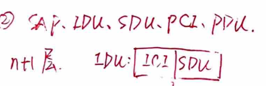
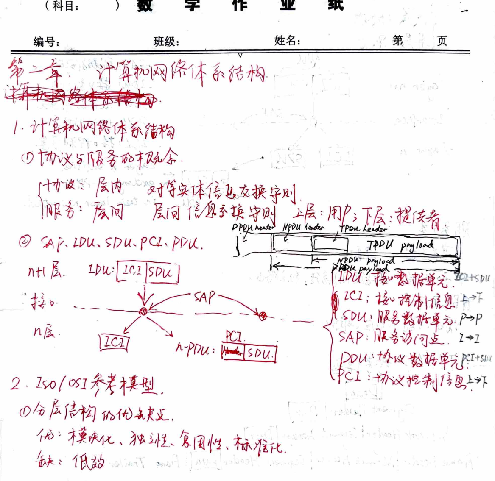
### Computer Network Architecture
#### Layer Structure - **Same Layer**: Protocol - **Different Layers**: Service
#### Data Flow - **Layer n+1**: - **IDU**: Interface Data Unit - **SDU**: Service Data Unit - **LCI**: Interface Control Information - **Layer n**: - **SDU**: Service Data Unit - **LCI**: Interface Control Information - **SAP**: Service Access Point - **n-PDU**: n-Protocol Data Unit - **Layer n entities**: Exchange n-PDUs in their layer n protocol.
#### Service Classification - **Connection-Oriented**: Connection-oriented - **Connectionless**: Connectionless - **Service Primitives**: Request, Indication, Response, Confirm
#### Protocol Principles - **Request**: Request - **Indication**: Indication - **Response**: Response - **Confirm**: Confirm
### TCP/IP Reference Model
#### Data Structure - **Segment Header**: Data - **Network Header**: Segment Header Data - **Frame Header**: Network Header Segment Header Data Frame Trailer
#### Transmission Mode - **Point-to-Point**: Point-to-point - **Half-Duplex**: Half-duplex - **Full-Duplex**: Full-duplex
#### Bit Rate - **Bit Rate**: Bits per second
#### Transmission Mode - **Serial**: Serial - **Parallel**: Parallel
### Physical Layer Interface and Protocol
#### Bit Rate - **Bit Rate**: Bits per second
#### Transmission Mode - **Serial**: Serial - **Parallel**: Parallel
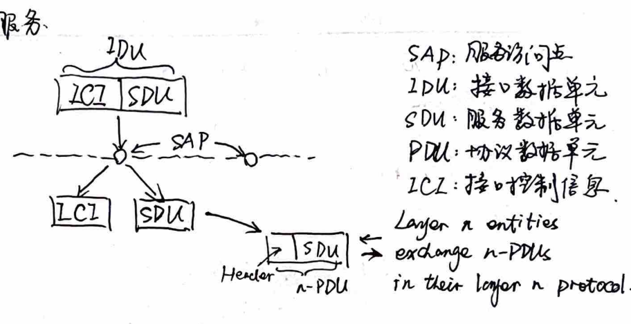
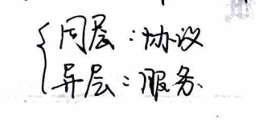
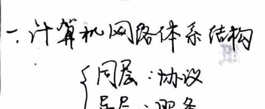
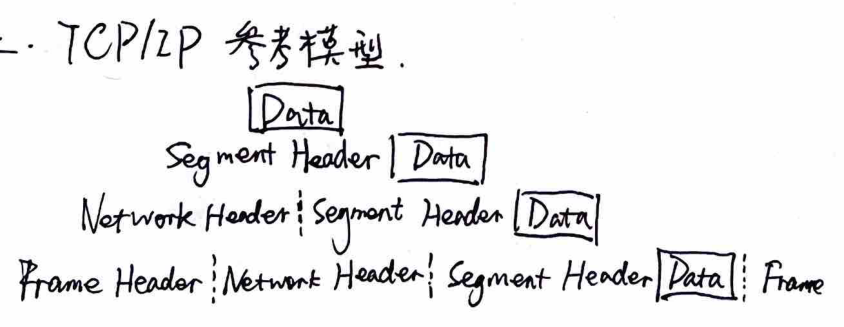
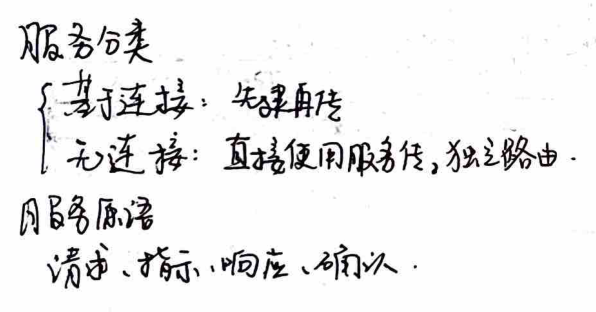
### Chapter 3: Physical Layer Technology
#### 1. Data Communication Theory Basics
- **Baud Rate (baud):** The number of signal changes per second. - **Bit Rate (bit):** The number of binary digits transmitted per second.
#### 2. Data Communication Techniques
1. **Encoding Techniques**
- **NRZ (Non-Return to Zero):** Maintains a constant voltage level between 0 and 1. The signal level changes only at the start and end of a bit. The signal level is 1 when the bit is 1 and 0 when the bit is 0. - **Manchester Encoding:** The signal level changes at the midpoint of each bit. The signal level is 1 when the bit is 1 and 0 when the bit is 0. - **Differential Manchester Encoding:** The signal level changes at the midpoint of each bit. The signal level is 1 when the bit is 1 and 0 when the bit is 0. - **AMI (Alternating Mark Inversion):** The signal level changes at the midpoint of each bit. The signal level is 1 when the bit is 1 and 0 when the bit is 0. - **HDB3 (High-Level Data Baud Rate):** The signal level changes at the midpoint of each bit. The signal level is 1 when the bit is 1 and 0 when the bit is 0. - **B8ZS (Bi-Phase Mark with Zero Suppression):** The signal level changes at the midpoint of each bit. The signal level is 1 when the bit is 1 and 0 when the bit is 0. - **B64ZS (Bi-Phase Mark with Zero Suppression):** The signal level changes at the midpoint of each bit. The signal level is 1 when the bit is 1 and 0 when the bit is 0. - **B10ZS (Bi-Phase Mark with Zero Suppression):** The signal level changes at the midpoint of each bit. The signal level is 1 when the bit is 1 and 0 when the bit is 0. - **B16ZS (Bi-Phase Mark with Zero Suppression):** The signal level changes at the midpoint of each bit. The signal level is 1 when the bit is 1 and 0 when the bit is 0. - **B32ZS (Bi-Phase Mark with Zero Suppression):** The signal level changes at the midpoint of each bit. The signal level is 1 when the bit is 1 and 0 when the bit is 0. - **B64ZS (Bi-Phase Mark with Zero Suppression):** The signal level changes at the midpoint of each bit. The signal level is 1 when the bit is 1 and 0 when the bit is 0. - **B128ZS (Bi-Phase Mark with Zero Suppression):** The signal level changes at the midpoint of each bit. The signal level is 1 when the bit is 1 and 0 when the bit is 0. - **B256ZS (Bi-Phase Mark with Zero Suppression):** The signal level changes at the midpoint of each bit. The signal level is 1 when the bit is 1 and 0 when the bit is 0. - **B512ZS (Bi-Phase Mark with Zero Suppression):** The signal level changes at the midpoint of each bit. The signal level is 1 when the bit is 1 and 0 when the bit is 0. - **B1024ZS (Bi-Phase Mark with Zero Suppression):** The signal level changes at the midpoint of each bit. The signal level is 1 when the bit is 1 and 0 when the bit is 0. - **B2048ZS (Bi-Phase Mark with Zero Suppression):** The signal level changes at the midpoint of each bit. The signal level is 1 when the bit is 1 and 0 when the bit is 0. - **B4096ZS (Bi-Phase Mark with Zero Suppression):** The signal level changes at the midpoint of each bit. The signal level is 1 when the bit is 1 and 0 when the bit is 0. - **B8192ZS (Bi-Phase Mark with Zero Suppression):** The signal level changes at the midpoint of each bit. The signal level is 1 when the bit is 1 and 0 when the bit is 0. - **B16384ZS (Bi-Phase Mark with Zero Suppression):** The signal level changes at the midpoint of each bit. The signal level is 1 when the bit is 1 and 0 when the bit is 0. - **B32768ZS (Bi-Phase Mark with Zero Suppression):** The signal level changes at the midpoint of each bit. The signal level is 1 when the bit is 1 and 0 when the bit is 0. - **B65536ZS (Bi-Phase Mark with Zero Suppression):** The signal level changes at the midpoint of each bit. The signal level is 1 when the bit is 1 and 0 when the bit is 0. - **B131072ZS (Bi-Phase Mark with Zero Suppression):** The signal level changes at the midpoint of each bit. The signal level is 1 when the bit is 1 and 0 when the bit is 0. - **B262144ZS (Bi-Phase Mark with Zero Suppression):** The signal level changes at the midpoint of each bit. The signal level is 1 when the bit is 1 and 0 when the bit is 0. - **B524288ZS (Bi-Phase Mark with Zero Suppression):** The signal level changes at the midpoint of each bit. The signal level is 1 when the bit is 1 and 0 when the bit is 0. - **B1048576ZS (Bi-Phase Mark with Zero Suppression):** The signal level changes at the midpoint of each bit. The signal level is 1 when the bit is 1 and 0 when the bit is 0. - **B2097152ZS (Bi-Phase Mark with Zero Suppression):** The signal level changes at the midpoint of each bit. The signal level is 1 when the bit is 1 and 0 when the bit is 0. - **B4194304ZS (Bi-Phase Mark with Zero Suppression):** The signal level changes at the midpoint of each bit. The signal level is 1 when the bit is 1 and 0 when the bit is 0. - **B8388
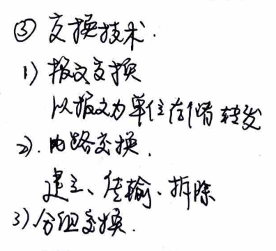
### Data Transmission
#### 1. Noise: - **Additive White Gaussian Noise (AWGN):** $2H\log_2V$ (for a 2V peak-to-peak signal) - **Random Noise:** $H\log_2(1 + S/N)$ (signal-to-noise ratio)
#### 2. Digital Data Transmission: - **Baseband Transmission:** - **Non-Return-to-Zero (NRZ):** - **Manchester Coding:** - **Differential Manchester Coding:**
- **Analog Data Transmission:** - **Frequency Modulation (FM):** - **Amplitude Modulation (AM):** - **Phase Modulation (PM):**
#### 3. Analog Data Transmission: - **Pulse Code Modulation (PCM):** - **Delta Modulation (DM):** - **Delta-Sigma Modulation (ΔΣ):**
#### 4. Time Division Multiplexing (TDM): - **Time slots:** - **Bandwidth:**
#### 5. Frequency Division Multiplexing (FDM): - **Frequency slots:** - **Bandwidth:**
#### 6. Wavelength Division Multiplexing (WDM): - **Wavelength slots:** - **Bandwidth:**
#### 7. Circuit Switching: - **Call setup:** - **Data transmission:** - **Call teardown:**
#### 8. Packet Switching: - **Packet switching:** - **Data transmission:** - **Call setup:**
#### 9. Frame Switching: - **Frame switching:** - **Data transmission:** - **Call setup:**
### Data Link Layer: Definition and Function
#### 1. Data Link Layer Services: - **Unacknowledged Connectionless:** - **Example:** - **Acknowledged Connectionless:** - **Example:** - **Acknowledged Connection-oriented:** - **Example:**
#### 2. Framing: - **Bit stuffing:** - **Character stuffing:** - **Byte stuffing:**
#### 3. Error Control: - **Error detection:** - **Error correction:**
#### 4. Flow Control: - **Sliding window:** - **Stop-and-wait:**
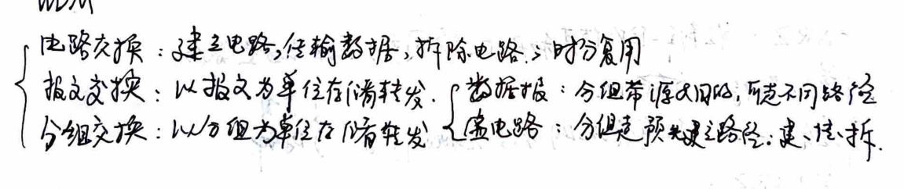
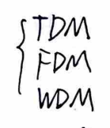
### Chapter 3: Physical Layer and Data Link Layer
#### 3.1 Physical Layer and Protocol 1. **Definition and Function of the Physical Layer** - **Definition**: The physical layer is responsible for establishing, maintaining, and terminating data link connections between network entities. It provides a bit stream transmission over a physical connection. - **Function**: It ensures transparent bit stream transmission between two network devices.
2. **Physical Layer Characteristics** - **Electrical, Functional, Logical, and Mechanical**
3. **Typical Physical Layer Standard Interfaces**: RS-232C → RS-422
4. **Transmission Mediums** - Magnetic medium, twisted pair, coaxial cable, and optical fiber.
#### Chapter 4: Data Link Layer Technology
1. **Definition and Function of the Data Link Layer** - **Definition**: The data link layer ensures error-free transmission on a physical medium. - **Function**: It provides data transmission services, framing, error detection, and flow control.
2. **Error Detection and Correction** 1. **Error Detection**: **Hamming Code** - In the 2n-1th position, insert a parity bit that is the XOR of all bits in the position. If the parity bit is 1, there is an error. 2. **Error Correction**: **CRC Checksum** - Append a CRC code at the end of the data. The receiver calculates the CRC and compares it with the received code. If they match, the data is correct; otherwise, it is corrected.
### Chapter 3: Error Control
#### 3. Error Control - **Error Characteristics**: Random, continuous burst errors. - **Error Detection**: Hamming Code (detects d errors; corrects d errors; detects 2d errors; corrects 2d errors) - **Error Detection + Forward Error Correction**: CRC (Cyclic Redundancy Check), modulo 2 division
#### 4. Flow Control - Usually implemented in the transport layer. - **Unsolicited Unicast Protocol** - **Unicast with Acknowledgment**: Has ARQ (Acknowledgment-Request) - **Unicast with ARQ**: Has sequence number + ARQ - **One-Bit Sliding Window Protocol**: Receive window = 1, no congestion, receive and send sequence number + ARQ - **n-Frame Protocol**: Receive window = 1, send window > 1, no congestion, receive and send sequence number + ARQ - **Selective Repeat Protocol**: Receive and send window > 1, retransmit lost frames, no congestion, receive and send sequence number + ARQ
#### 5. Local Area Network Technology - Medium Access Control Protocol MAC - **Static Channel Allocation**: TDM, FDM, WDM - **Dynamic Channel Allocation**: - **Pure ALOHA**: After collision, retransmit after a random time. Collision window: 2L - **Slotted ALOHA**: Slotted, other times. Collision window: L - **CSMA**: Carrier Sense Multiple Access with Collision Detection (CSMA/CD): After collision, stop transmission and send a jam signal. Efficiency: α/(α + 1), where α is the load factor. Efficiency: α/(α + 1). - **Binary Exponential Backoff**: The number of slots increases exponentially. Efficiency: α/(α + log₂N).
This chapter covers error detection and correction methods, flow control mechanisms, and medium access control protocols in local area networks.
3. Basic Data Link Layer Protocol - Unidirectional, bidirectional, and half-duplex channels. 4. Sliding Window Protocol - Unidirectional to bidirectional; retransmission reduces "frame arrival" interruptions. 1. One-bit sliding window - Win = 1, sequence number: 0, 1 2. Retransmit several frames - RWin = 1, no retransmission buffer 3. Selective retransmission - Transmit window: MaxSeq, receive window: (MaxSeq + 1) / 2, no overlap between windows. 5. Common Data Link Layer Protocols - Frame structure: start delimiter, address field, control field, data field, and checksum. - Frame types: data frames, control frames, and null frames. 6. Token Ring Technology 1. Competitive Data Link Layer Protocol 1) Pure ALOHA, slotted ALOHA - Collision random retransmission (collision window: 2D/D), priority (priority / priority / random) 2) CSMA/CD - Collision random retransmission (collision window: 2D/D), priority (priority / priority / random)
### Chapter: Network Technologies
#### MAC Layer - **MAC Layer**: No confirmation mechanism and flow control. - **LLC Sublayer**: Has confirmation mechanism and flow control. ⇒ HDLC protocol.
#### Six. Ethernet Technology, Bridge Technology, and Token Ring Technology
**802.3:** - **Physical Layer**: Manchester encoding; repeaters; twisted-pair standards;集线器 (duplex ratio = 2×10^8). - **MAC Layer**: 7-byte header; 6-byte source address; 2-byte length; 0~1500 Data; 0~46 padding; 4-bit checksum. - **CSMA/CD**: Binary exponential backoff.
**Bridge:** - **Spanning Local Area Network Segments**: Separates collision domains. In a connected LAN, it performs forwarding. - **Source Address Learning**: - **Destination Address Forwarding**: Based on the forwarding table (destination address and bridge port mapping). - **Unknown Address Forwarding**: - **STP Algorithm**: Broadcast BPDU. The smallest root bridge, forming a minimal spanning tree. - **Root Bridge (Bridge) Broadcasts its own BPDU**. - **Compare the cost of each port receiving BPDU**. - **Compare the cost of its own reception and transmission**. - **Close the port with the highest cost**.
**Token Ring:** - **3-byte token ring**: When information is sent, the token is obtained. After the end, the station releases the token.
#### Seven. Network Layer Technology - **Function**: Selects routes; provides services for the transport layer; separates broadcast domains. - **Connectionless Service**: - **Virtual Circuit**: - **Data Packet**:
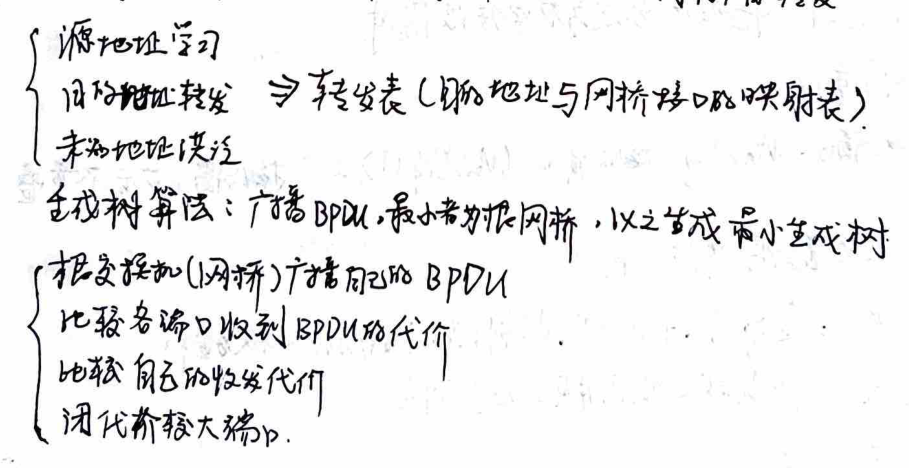
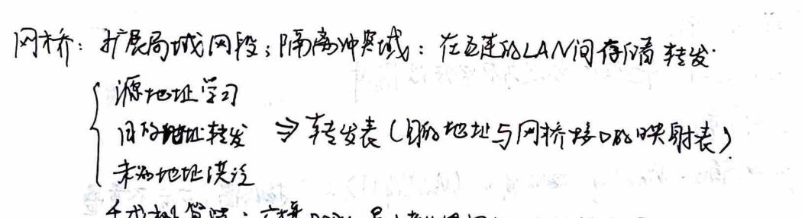
### Chapter 2: Network Layer Technology
#### 2.1 Ethernet Technology - **MAC Address Format**: - **7B Preamble**: 1B Start of Frame Delimiter (SFD) - **6B Source MAC**: Source MAC Address - **6B Destination MAC**: Destination MAC Address - **2B Length**: Frame Length (0-1500B Data) - **4B Frame Check Sequence (FCS)**: 4B cyclic redundancy check (CRC)
- **CSMA/CD + Binary Exponential Backoff**: - **Collision Detection**: If a collision occurs, the time elapsed is divided into 2^n time slots. #### 2.2 Bridge Working Principle - **Spanning Tree Protocol (STP)**: - **Bridge Protocol Data Unit (BPDU)**: - **Broadcast BPDU**: The smallest cost is the root. - **Comparison of BPDU Costs**: Compare the cost of each port receiving the BPDU. - **Cost Comparison**: Compare the cost of the port receiving the BPDU. - **Port State Transition**: Close the port that receives the BPDU with the highest cost.
#### 2.3 Network Layer Technology Overview - **Routing and Switching**: - **Routing**: Determining the best path for data packets. - **Switching**: Forwarding data packets based on the destination address. - **Service Provided by Transport Layer**: Ensuring reliable data transmission and error correction.
### IP Protocol
#### Bits: - Version: 4 bits - IP Header Length: 4 bits - Service Type: 8 bits - Total Length: 16 bits - Identification: 16 bits - Flags: 1 bit - Fragment Offset: 13 bits (8-byte segments) - Time to Live (TTL): 8 bits - Protocol: 8 bits - Header Checksum: 16 bits - Source Address: 32 bits - Destination Address: 32 bits
#### IP Address: - Classless Inter-Domain Routing (CIDR): Longest Prefix Matching - All 0s: Local/Host - All 1s: Broadcast
#### ICMP: - Internet Control Message Protocol: Ping - ARP: - Address Resolution Protocol: IP → MAC - RARP: Reverse Address Resolution Protocol: MAC → IP
#### Routing Protocol: 1. **Static Routing**: Manually configured; default routes (not reachable automatically) are configured. 2. **Dynamic Routing**: 1. **Distance Vector Method**: Periodic exchange of routing tables (address | port | cost). Convergence is slow. - Split Horizon: Does not advertise learned routes back to the source. - Poison Reverse: Set the cost of a failed IP to infinity. - Triggered Update: Sends updates immediately when network state changes. 2. **Link State Method**: Periodic exchange of LSPs (link state | port | cost | sequence | TTL) → Dijkstra - OSPF: Area-based LSP updates, area-based distance vector method. (Area divided into sub-areas).
### Autonomous System (AS)
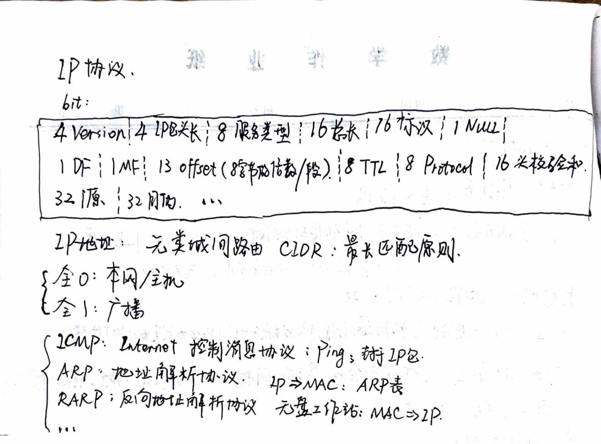
### Virtual Circuits and Data Frames
#### Issue: - **Datagram Subnet**: - Circuit Establishment: ✗ - Addressing: Source IP & Destination IP - State Information: ✗ - Routing: Independent routing per segment - Congestion Control: See Transport Layer - **VC Subnet**: - Circuit Establishment: ✓ - Addressing: Short VC number - State Information: ✓ - Routing: VC routing - Congestion Control: Each VC has its own buffer
### Internet Network Layer Protocols
#### 1. IP - **46-bit Version**: 46-bit header length - **46-bit Packet Length**: 86-bit service type - **16-bit Identifier**: 16-bit null - **16-bit Flags**: 16-bit flags (0-576B) - **16-bit Last Segment**: 136-bit segment offset (mod 8B = 0) - **8-bit Time to Live**: 8-bit TTL - **8-bit Protocol**: 16-bit header checksum - **32-bit Source Address**: Source address - **32-bit Destination Address**: Destination address - **40-bit Options**: (mod 4B = 0) - **All 0**: Local network/Local host - **All 1**: Broadcast address - **CIDR**: Classless Inter-Domain Routing: Subnet mask, longest match - **ARP / RARP**: - **IP → MAC**: Within the same network: Use the IP in the ARP table; between networks: Query the gateway.启动生成子网广播 - **MAC → IP**: Used for workstation startup - **ICMP**: Internet Control Message Protocol
### ICMP: Internet Control Message Protocol - **ICMP**: Internet Control Message Protocol
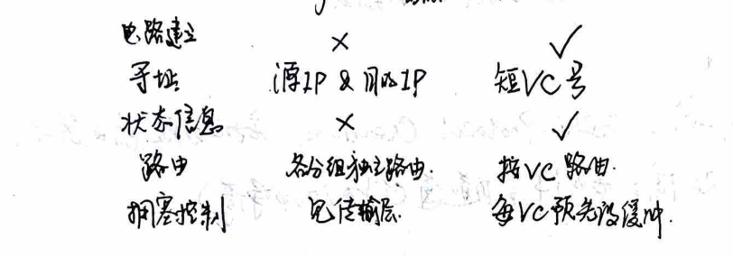
### Border Gateway Protocol (BGP)
#### Hierarchical Routing - **Hierarchical routing reduces the size of the routing table and minimizes the amount of routing updates.** - **Inter-domain routing:** Focuses on strategies. - **Transmits routing information through TCP.** Uses distance-vector method.
#### IPv6 - **128-bit address, 13 to 7 bits.** No ZHL, Protocol, Checksum. Hosts and routers are not segmented. - **IPv4 to IPv6:** Dual stack; tunneling; tunneling (for IPv4 traffic)
#### Transport Layer Technology - **Function:** Eliminates the unreliability of the network layer. - **Services:** Connection-oriented: Service model: Connection-oriented service. Connectionless: Berkeley Sockets. - **Address:** Transport service access point (TSAP) (IP address, port). - **Pre-connection access:** Name server or domain name server lookup. Initial connection protocol. - **Three-way handshake for connection establishment:** - A sends a sequence number X CR TPDU. - B sends a sequence number Y CC TPDU, confirming A's sequence number X CR TPDU. - A sends a sequence number X+1 and the first data TPDU, confirming B's sequence number Y CR TPDU. - Establish connection with three-way handshake + timeout mechanism.
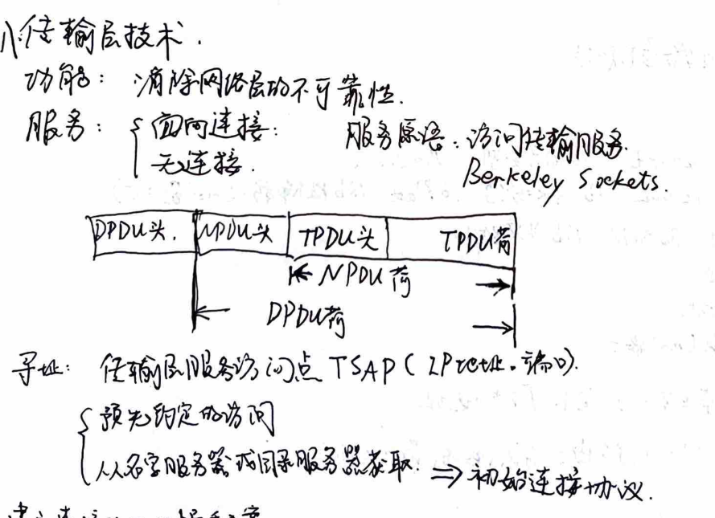
### Chapter 3: Dynamic Routing Protocols
#### 3.1. Intradomain Routing Protocols 1. **Distance-Vector Protocol (DVMRP)** - **Distance Vector**: Exchanges routing information with neighboring nodes (Routing Table). **RIP**. - **Link State Protocol (LSP)**: Exchanges link state information with all nodes. **OSPF**. - **Slow Convergence**: Level Splitting (Split Horizon), Poison Reverse (Infinite Loop), Triggered Update (Clock). - **Fast Convergence**: Area Division (Layered Routing), Border Gateway Protocol (BGP).
#### 3.2. Interdomain Routing Protocols - **Border Gateway Protocol (BGP)**: TCP connection, path vector algorithm, policy. **BGP**.
### Chapter 4: IPv6 - **IPv6 Header**: - **48-bit Version**: 48-bit Flow Label, 24-bit Traffic Class. - **40-bit Total Length**: 8-bit Extension Header, 8-bit Hop Limit. - **16-bit Source Address**: 128-bit Source Address. - **16-bit Destination Address**: 128-bit Destination Address.
### Chapter 6: Transport Layer Technology 1. **Transport Layer Services**: - **Connection-Oriented Services**: Establishes a connection between the source and destination nodes. **TCP**. - **Connectionless Services**: No connection is established between the source and destination nodes. **UDP**. - **Transport Layer User (Application Layer)**: Applications use the transport layer services through the transport layer user interface. **SAP**.
2. **Transport Layer Protocols**: - **TCP**: Establishes a connection between the source and destination nodes. **TCP**. - **UDP**: Provides a connectionless service. **UDP**.
### Transport Layer
The transport layer (transport entity) provides each connection with a separate buffer, storing TPDU. Flow control: sliding window protocol. The receiver decides the sender's window size. The sender sends TPDU.
TCP: - Access mode: both parties create a socket (IP address, port number). - Each connection: (socket 1, socket 2) = point-to-point. - No broadcast, no multicasting. - Segments are allocated sequence numbers. - The segment size is limited by the IP packet header length and the data link layer MTU limit (e.g., 1500). - Reliable transmission: sliding window protocol. - Flow control and congestion control: slow start + congestion avoidance. - MSS: Max Segment Size. - TCP Reno: fast retransmit + fast recovery.
UDP: - No need to establish, no congestion control: used for P2P, DNS, SNMP. - Application: RTP: network media. - RTCP: transport control information, RTP stream synchronization.
### Application Layer
Application layer protocols: - Application programs, using lower layer protocols to provide services. - API: application programming interface.
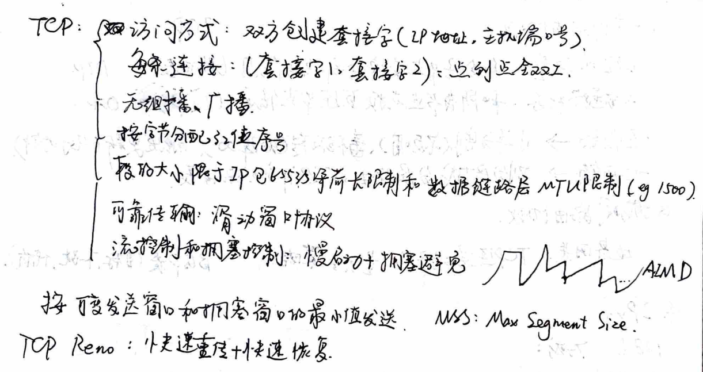
### Network Communication and Transport Layer Protocols
#### 1. Network Communication - **With Service Program at TSAP**: Connection established. - **Without Service Program at TSAP**: The process server generates a service program to handle the connection. The process server then returns to continue listening.
#### 2. Three-Handshake Scheme for Establishing a Connection - **Three-Handshake + Timeout Scheme for Relieving Connection**: - **Variable Sliding Window Protocol for Flow Control**: The sliding window size dynamically adjusts based on the available buffer space and the time since the last packet was received.
#### 3. Internet Transport Layer Protocols
1. **TCP (Transmission Control Protocol)** - **Connection Management** - **Establishing a Connection**: Server listens on a port using `listen()`, accepts connections using `accept()`. Client connects using `connect()`. TCP: SYN = 1, ACK = 0. Server sends RST (reset) or SYN = 1, ACK = 1 (if it is listening). Client sends SYN = 0, ACK = 1. - **Relieving a Connection**: FIN = 1, start a timer. If the other side (FIN = 1) ACK = 1, start a timer. ACK = 1, close the connection. If the timer expires, close the connection. - **Reliable Transmission** - **Based on Acknowledgment and Variable Window Size**: URG (1 byte) prevents deadlocks. The sender sends a segment with a large segment size and retransmits it after receiving an acknowledgment. The receiver reserves half of the window size and updates the window size when it receives an acknowledgment.
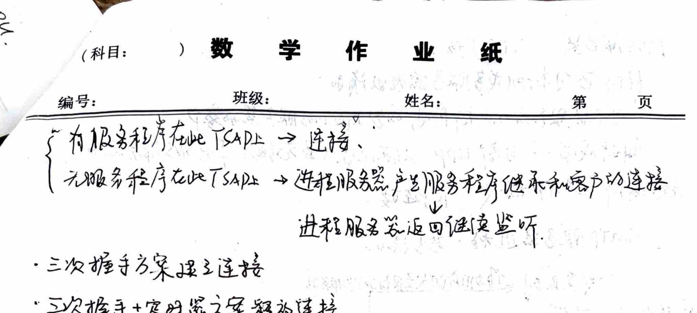
### DNS Server and UDP Connection
When a UDP packet from a local DNS server sends a request:
- If the local DNS server cannot resolve the request, it becomes a DNS client for the upper-level DNS server. - If the resolution is successful, it sends a UDP resource record (RR) to the client. The local DNS server also stores this record.
### Email: SMTP Protocol and TCP Connection
SMTP server process: Port 25.
- **Message Queue**: Messages are stored in the message queue. - **Mailbox**: Messages are stored in the mailbox. - **Login**: The user logs in. - **Send Email**: The email is sent. - **POP3**: Download - **IMAP**: Download - **MIME**: Support for multimedia content.
### WWW Service: HTTP Protocol, TCP Connection, FTP, Telnet
WWW server process: Port 80.
### URL Structure
URL includes: - Protocol type - The address of the webpage (domain/IP) - The name of the file containing the webpage
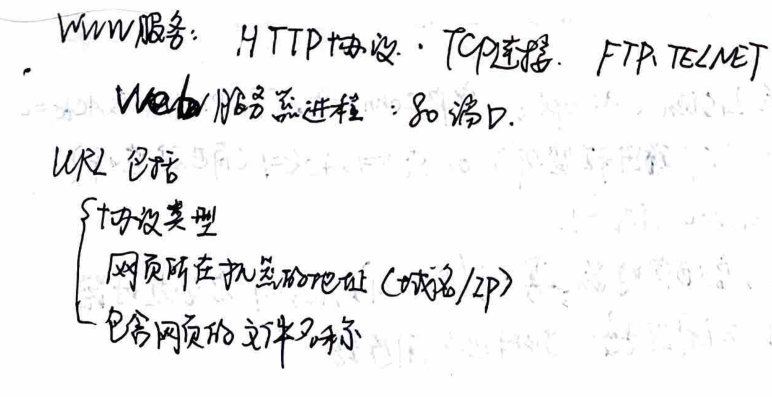
### Chapter 7: Application Layer Technology
#### 1. Overview of the Application Layer - **16-bit Source**: 16-bit source. - **16-bit Destination**: 16-bit destination. - **16-bit Length**: 16-bit length. - **16-bit Checksum**: 16-bit checksum. - **No Connection, No Handshake, No Congestion Control, No Close & Out-of-Order**.
#### 2. Client/Server Model - **API**: application programming interface. - **Application Programming Interface (API)**: defines the interface between applications and the transport layer.
3. DNS Service (53 points) - Client UDP local DNS server (commonly known as resolver) → - Query → UDP response → (cached, time-out deleted). - Can't → UDP upper DNS server. - Resource record components: Domain name, TTL, Type, Class, IP (Value).
4. Email (25 points) - Client TCP SMTP server, sending → - Address in this server → store email → POP3/IMAP: download/undownload. - Address in other SMTP servers → send email to queue → - Compose, send, report, display, process.
5. WWW Service (80 points) - URL: Uniform Resource Locator: Protocol (HTTP, FTP, Telnet); IP/DN; filename.
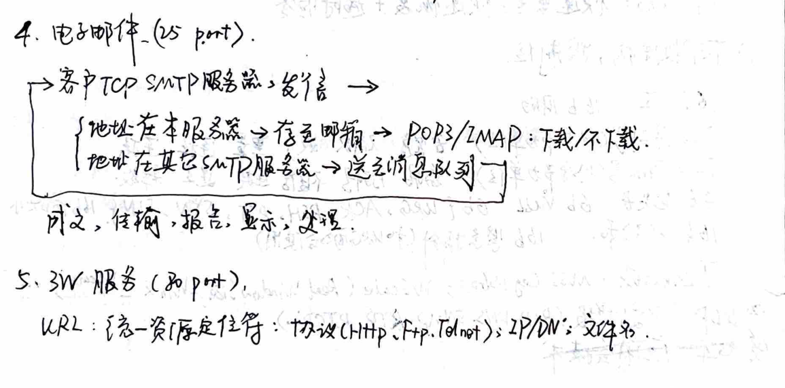
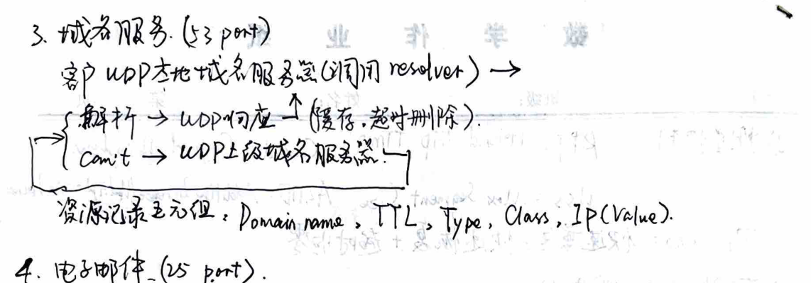